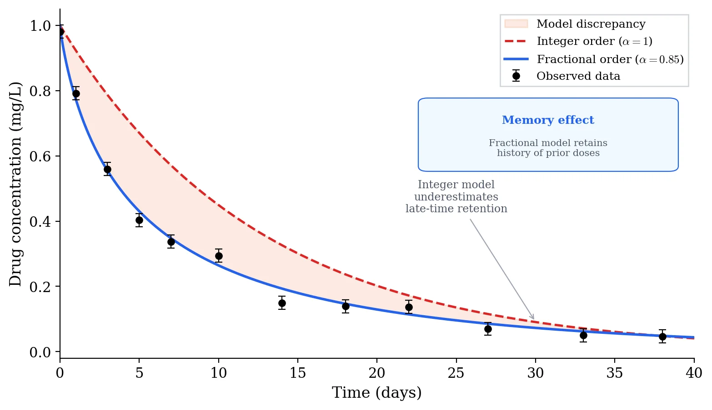

📄 Published in Computational and Mathematical Biophysics (2019)
When modeling how a drug moves through the body, classical approaches assume the system has no memory: each time step depends only on the current state. But pharmacological systems often retain memory of earlier drug exposure, and ignoring this can lead to misleading predictions. In this project, we used discrete fractional calculus, specifically nabla operators, to build PK/PD models that naturally encode this history. We applied the framework to tumor growth and anti-cancer drug response.
This is where memory enters the picture. The fractional sum aggregates all prior states, weighted by a kernel that decays over time. Recent history matters more, but old history is not forgotten.
The key generalization: extending integer-order differencing to non-integer orders \(\alpha\). When \(\alpha = 1\) we recover the standard backward difference; fractional values give tunable control over memory depth.
Modeling setup
To keep the mathematics clean, we work under a few assumptions:
Time is sampled on a discrete grid \(t \in \mathbb{N}_a\), natural for dosing schedules and clinical measurements;
The fractional order satisfies \(0 < \alpha < 1\), which gives us "partial memory" rather than full or zero memory;
State variables represent drug concentrations and tumor volumes whose current values depend on the entire dosing history.
\[
\nabla_a^{\alpha} x(t+1) = A x(t) + B u(t), \qquad y(t) = C x(t)
\]
This state-space form is our entry point for studying controllability (can we steer the system to a desired state?) and observability (can we infer hidden states from measurements?) in fractional PK/PD systems.
Integer vs. Fractional Order

Memory effects in drug response. The integer-order model (red dashed, \(\alpha = 1\)) follows standard exponential decay, while the fractional-order model (blue solid, \(\alpha = 0.85\)) retains a heavier tail that better captures the slow elimination observed in clinical data. The fractional model accounts for cumulative drug exposure history.
A study on discrete and discrete fractional pharmacokinetics-pharmacodynamics models for tumor growth and anti-cancer effects
F.M. Atıcı, M. Atıcı, N. Nguyen, T. Zhoroev, G. Koch · Computational and Mathematical Biophysics, 2019 · 61 citations